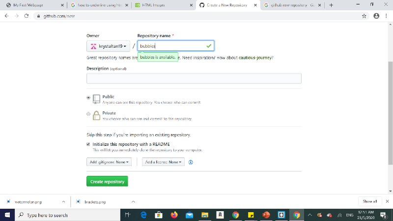
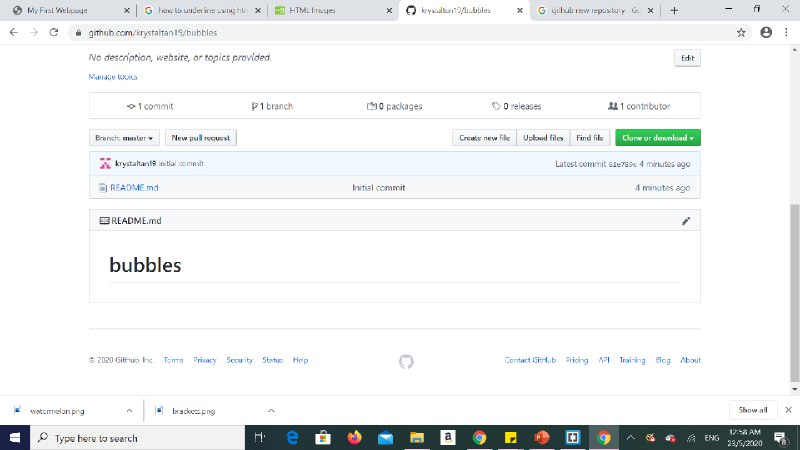
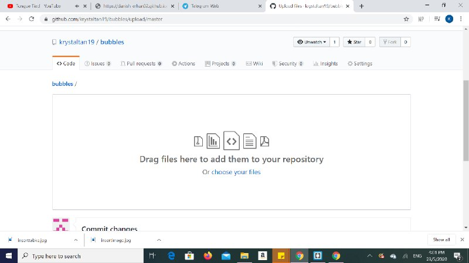
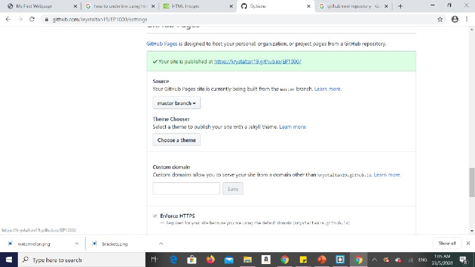

What we learnt :>
:> In week 3, we learnt how to host our webpages online for anyone to see through the use of github pages. We learnt how to create our first repository on github where we uploaded our index.html file to host it as a website.Hosting a website
STEP 1: Create a Github pages account. After you have created an account create a repository. Key in the name of your repository.

Make sure to click the "initiate this repository with a README" box. Make the repository public. Click "create repository". You will now see this.

STEP 2: Click "upload files" to reach this page. Upload your "index.html" file by draging and dropping it into the boxed area.

STEP 3: Click on the setting button and change the source from "none" to "master branch".

My First Webpage
My work